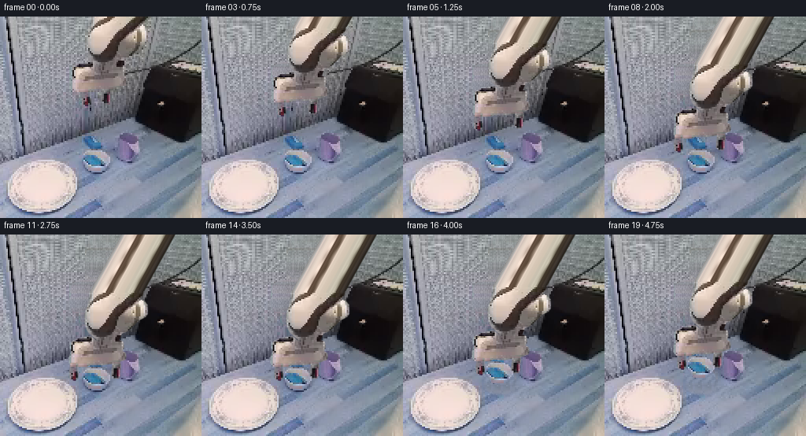
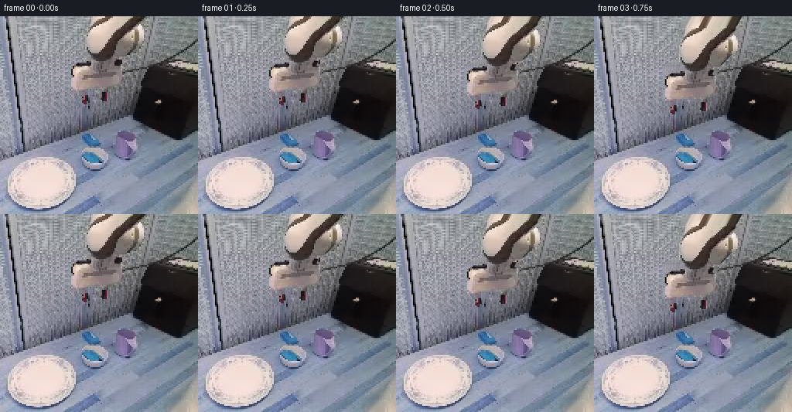

CODING AGENTS AS PIXEL WORLD MODELS
traex/GPT-6-Astra · common50_0043
点击播放 · 原生 RGB 像素
逐轮保存的候选
回放视频、检查图与代码变化。
每份候选均可单独播放。实际图片检查记录在下方工具轨迹中。
候选 01播放与检查图
点击播放 · 原生 RGB 像素


展开代码变化
--- 上一保存版本
+++ 本次保存版本
@@ -0,0 +1,218 @@
+"""Deterministic RGB-only tabletop grasp animation.
+
+Uses the supplied photograph as textures. The visible arm/tool is a rigid
+translated assembly, with independently translating parallel jaws. The arm
+continues beyond the top crop; that hidden continuation is constructed from
+its own cross section, not stretched from a visible link. At contact the bowl
+is attached to the tool with a constant relative pose.
+"""
+from pathlib import Path
+import math
+import numpy as np
+from PIL import Image, ImageDraw, ImageFilter
+import artifact_io
+
+ROOT = Path(__file__).resolve().parent
+W = H = 256
+TOP = 128
+SOURCE = np.array(Image.open(ROOT / 'first_frame.png').convert('RGB'))
+
+
+def polygon_mask(points, blur=.35):
+ sc = 4
+ im = Image.new('L', (W*sc, H*sc), 0)
+ ImageDraw.Draw(im).polygon([(round(x*sc), round(y*sc)) for x,y in points], fill=255)
+ im = im.resize((W,H), Image.Resampling.LANCZOS)
+ if blur:
+ im = im.filter(ImageFilter.GaussianBlur(blur))
+ return np.asarray(im).astype(float)/255
+
+# The native silhouettes and joints, traced using numeric color boundaries.
+forearm = polygon_mask([
+ (116,-4),(184,-4),(183,5),(178,10),(185,12),(189,18),
+ (189,29),(186,33),(178,37),(173,42),(168,47),(163,51),
+ (156,54),(153,62),(143,66),(128,66),(123,61),(119,57),
+ (114,53),(111,48),(109,41),(109,29),(111,23),(113,18),
+ (114,11)
+])
+palm = polygon_mask([
+ (108,58),(117,57),(123,62),(131,63),(143,62),(153,62),
+ (158,64),(159,71),(157,76),(161,78),(162,82),(161,87),
+ (153,90),(145,92),(132,94),(117,94),(111,96),(96,97),
+ (91,95),(89,91),(89,84),(91,78),(92,75),(90,72),
+ (90,66),(94,63),(100,60)
+])
+leftjaw = polygon_mask([
+ (105,91),(114,91),(115,96),(115,106),(114,111),
+ (111,114),(106,113),(103,110),(103,103),(104,98)
+], .25)
+rightjaw = polygon_mask([
+ (130,90),(140,90),(141,95),(140,101),(140,108),
+ (138,111),(132,111),(129,108),(129,101),(130,95)
+], .25)
+# Keep the original overlapping metal roots as parts of the palm.
+body = np.maximum(forearm, palm)
+fullmask = np.maximum.reduce([body,leftjaw,rightjaw])
+
+bowl = polygon_mask([
+ (108,168),(121,168),(129,170),(133,171),(135,174),
+ (138,177),(140,181),(140,184),(138,187),(135,191),
+ (131,194),(128,196),(116,197),(112,195),(110,192),
+ (107,187),(104,184),(102,179),(103,175),(104,172)
+], .25)
+
+
+def erase_local(image, mask, mode='arm'):
+ """Reconstruct occluded fixed surface from local scanline RGB samples.
+
+ The texture residual comes exclusively from the same table photograph.
+ A feathered wider removal accounts for the native antialias fringe.
+ """
+ src = image.astype(float)
+ out = src.copy()
+ hard = mask > .035
+ broad = np.asarray(Image.fromarray((mask*255).astype('uint8')).filter(
+ ImageFilter.MaxFilter(3))).astype(float)/255
+ hard = broad > .04
+ if mode == 'arm':
+ # Each scanline can contain disjoint tool/finger components.
+ for y in range(H):
+ xs = np.flatnonzero(hard[y])
+ if not len(xs): continue
+ parts = np.split(xs, np.where(np.diff(xs)>1)[0]+1)
+ for part in parts:
+ x0,x1 = int(part[0]),int(part[-1])
+ lo,hi = max(0,x0-2), min(W-1,x1+2)
+ ys = slice(max(0,y-3),min(H,y+4))
+ lc = np.median(src[ys,max(0,lo-6):lo+1],axis=(0,1))
+ rc = np.median(src[ys,hi:min(W,hi+7)],axis=(0,1))
+ # Avoid carrying the right-hand black mat into bare top table.
+ if y < 67:
+ rc = np.maximum(rc, [105,106,109])
+ u = (np.arange(x0,x1+1)-lo)/max(1,hi-lo)
+ value = lc[None,:]*(1-u[:,None])+rc[None,:]*u[:,None]
+ donor_x = 30+(np.arange(x0,x1+1)*3+y//12)%49
+ donor = SOURCE[y,donor_x].astype(float)
+ noise = donor - np.median(donor,axis=0)
+ value += np.clip(noise,-20,20)*.50
+ out[y,x0:x1+1] = value
+ else:
+ # Blue-gray unoccupied tabletop from immediately to the right.
+ for y,x in zip(*np.nonzero(hard)):
+ sx = 141+(x-100)%12
+ sy = min(255,y+15)
+ base = SOURCE[sy,sx].astype(float)
+ # Similar brightness but retain the cooler near-field surface.
+ out[y,x] = base + np.array([-6.,-4.,-1.])
+ feather = np.asarray(Image.fromarray((broad*255).astype(np.uint8)).filter(
+ ImageFilter.GaussianBlur(.5))).astype(float)/255
+ return np.clip(src*(1-feather[...,None])+out*feather[...,None],0,255)
+
+CLEAN = erase_local(SOURCE,fullmask)
+# Texture layers use premultiplied RGB when transforming, avoiding dark edges.
+def layer(rgb,alpha,top=0):
+ a = np.zeros((H+top,W),float)
+ c = np.zeros((H+top,W,3),float)
+ a[top:] = alpha
+ c[top:] = np.asarray(rgb)*alpha[...,None]
+ return c,a
+
+arm_rgb,arm_alpha = layer(SOURCE,body,TOP)
+# Continue the upper link above the crop along its unchanged physical axis.
+# Only newly exposed pixels use this continuation; all visible source-link
+# pixels undergo a single rigid transform.
+for yy in range(-TOP,0):
+ x = np.arange(W,dtype=float)
+ coord = x+.55*yy
+ edge = np.minimum(coord-115.5,184.-coord)
+ a = np.clip(edge+.5,0,1)
+ # The source top cross section retains its ivory faces and dark seam.
+ # A 2-row sample introduces the source's own very small surface texture.
+ row0 = SOURCE[0].astype(float)
+ row1 = SOURCE[2].astype(float)
+ mix = .16*(1-math.cos(yy*.21))
+ col = np.stack([np.interp(coord,np.arange(W),
+ row0[:,ch]*(1-mix)+row1[:,ch]*mix) for ch in range(3)],axis=-1)
+ arm_alpha[yy+TOP] = a
+ arm_rgb[yy+TOP] = col*a[:,None]
+
+jaw_l = layer(SOURCE,leftjaw)
+jaw_r = layer(SOURCE,rightjaw)
+bowl_layer = layer(SOURCE,bowl)
+
+
+def moved(lay, dx,dy,top=0):
+ c,a = lay
+ # Sample using inverse translation. Link geometry is never rescaled.
+ data = (1,0,-dx,0,1,top-dy)
+ ca = []
+ for ch in range(3):
+ im = Image.fromarray(c[:,:,ch].astype(np.float32),'F')
+ ca.append(np.asarray(im.transform((W,H),Image.Transform.AFFINE,data,
+ resample=Image.Resampling.BICUBIC)))
+ im = Image.fromarray(a.astype(np.float32),'F')
+ aa = np.clip(np.asarray(im.transform((W,H),Image.Transform.AFFINE,data,
+ resample=Image.Resampling.BICUBIC)),0,1)
+ return np.clip(np.stack(ca,-1),0,255),aa
+
+
+def over(bg,lay):
+ c,a = lay
+ return bg*(1-a[...,None])+c
+
+
+def smooth(u):
+ u = float(np.clip(u,0,1))
+ return u*u*(3-2*u)
+
+
+def motion(i):
+ # 0--2.5 s: open the fingers and approach just outside the rim.
+ descend = smooth(i/11)
+ opening = smooth(i/6)
+ closure = smooth((i-11)/3)
+ # Closure first, then a slow 14 pixel verification lift.
+ lift = 14*smooth((i-14)/4)
+ dx = -1.5*descend
+ dy = 72*descend-lift
+ jl = -14*opening+4.5*closure
+ jr = 14*opening-4*closure
+ return dx,dy,jl,jr,lift,descend
+
+
+def main():
+ frames = [SOURCE.copy()]
+ # The original bowl's short table-contact shadow is revealed by lifting.
+ sm = polygon_mask([(103,187),(139,186),(140,198),(129,202),
+ (114,201),(106,196)],1.3)
+ bowl_removed = erase_local(CLEAN,np.maximum(bowl,sm),mode='bowl')
+ y,x = np.mgrid[:H,:W]
+ for i in range(1,20):
+ dx,dy,jl,jr,lift,d = motion(i)
+ frame = CLEAN.copy()
+ if lift>0:
+ frame = bowl_removed.copy()
+ # A soft ground shadow stays below the lifted object.
+ shadow = np.exp(-(((x-124)/(17+lift*.13))**2+
+ ((y-195)/(5+lift*.09))**2)/2)
+ frame *= 1-(.10-lift*.002)*shadow[...,None]
+ frame = over(frame,moved(bowl_layer,0,-lift))
+ # Approach/contact shadow is deliberately restrained and continuous.
+ strength = .075*d
+ shadow = np.exp(-(((x-(124+dx))/31)**2+
+ ((y-(118+dy+lift*.4))/12)**2)/2)
+ frame *= 1-strength*shadow[...,None]
+ # Parallel jaws have prismatic motion; the palm/forearm stay rigid.
+ # Palm is behind the two independent, source-textured jaw assemblies.
+ frame = over(frame,moved((arm_rgb,arm_alpha),dx,dy,TOP))
+ frame = over(frame,moved(jaw_l,dx+jl,dy))
+ frame = over(frame,moved(jaw_r,dx+jr,dy))
+ frames.append(np.clip(np.rint(frame),0,255).astype(np.uint8))
+ frames = np.stack(frames)
+ assert frames.shape == (20,256,256,3)
+ assert np.array_equal(frames[0],SOURCE)
+ artifact_io.save(frames,ROOT)
+ print('Saved 20 RGB frames at 256x256, 4 fps.')
+
+if __name__ == '__main__':
+ main()
可观测工具轨迹
实际执行的命令与返回图片。
命令 1exit 0
/bin/bash -lc 'ls -la; cat prompt.txt; cat GENERATION_RULES.md'
命令 2exit 0
/bin/bash -lc "cat task_spec.json; cat artifact_io.py; python - <<'PY'
from PIL import Image
im=Image.open('first_frame.png'); print(im.mode,im.size)
PY"命令 3exit 0
/bin/bash -lc "python - <<'PY'
from PIL import Image
import numpy as np
im=np.array(Image.open('first_frame.png'))
a=np.array(Image.open('first_frame.png').resize((96,64)))
# simple colors, brightness as symbols
for j,row in enumerate(a):
s=''
for r,g,b in row.astype(float):
if max(r,g,b)-min(r,g,b)<15:
s+= ' .:-=+*#%@'[int((r+g+b)/3/256*10)]
elif b>r*1.2 and b>g*1.15: s+='B'
elif r>g*1.3 and r>b*1.3: s+='R'
elif g>r*1.17 and g>b*1.06: s+='G'
elif r>b*1.2 and g>b*1.13: s+='y'
else:s+='o'
print(f'{j*4:03} '+s)
print('samples')
for y in range(0,256,16):
print(y, [(x,im[y,x].tolist()) for x in range(0,256,16)])
PY"命令 4exit 0
/bin/bash -lc "python - <<'PY'
import numpy as np
from PIL import Image
im=np.array(Image.open('first_frame.png'))
# color bins unambiguous per ranges
for box,scale in [((78,0,188,116),2),((72,146,156,204),1),((6,174,103,251),2)]:
x0,y0,x1,y1=box
a=np.array(Image.fromarray(im).crop(box).resize(((x1-x0)//scale,(y1-y0)//scale))).astype(float)
print('\\nBOX',box,'stride',scale,'Legend w white Y beige r rust B blue C cyan K black g gray : darkgray')
for y,row in enumerate(a):
st=''
for r,g,b in row:
if min(r,g,b)>200: ch='w' if max(r,g,b)-min(r,g,b)<20 else 'Y'
elif min(r,g,b)>155 and r>g+6 and r>b:ch='y'
elif r>g+8 and r>b+8:ch='r' if r<135 else 't'
elif b>r+25 and b>g+10:ch='B'
elif g>r+18 and b>r+18:ch='C'
elif max(r,g,b)<45:ch='K'
elif max(r,g,b)<80:ch=':'
elif max(r,g,b)<120:ch='-'
elif max(r,g,b)<155:ch='='
elif max(r,g,b)<195:ch='g'
else:ch='W'
st+=ch
print(f'{y0+y*scale:03} {st}')
PY"命令 5exit 0
/bin/bash -lc "python - <<'PY'
from PIL import Image
import numpy as np
im=np.array(Image.open('first_frame.png'))
# indexed 8x? quantized colours wrist
for y in range(0,120,4):
row=[]
for x in range(84,188,2):
r,g,b=im[y:y+2,x:x+2].mean((0,1))
# color warm, dark, background
if r-g>5 and r-b>0:c='A' if r>185 else 'a' if r>135 else 'r' if r>80 else 'd'
else:c='.' if max(r,g,b)>100 else ':' if max(r,g,b)>50 else '#'
row.append(c)
print(f'{y:03}', ''.join(row))
print('bowl every2 pixel RGB')
for y in range(164,200,2):
print(y,' '.join(f'{x}:{tuple(im[y,x])}' for x in range(98,144,2)))
PY"命令 6exit 0
/bin/bash -lc "python - <<'PY'
from PIL import Image
import numpy as np
im=np.array(Image.open('first_frame.png')).astype(float)
print('Saturated blue contents components (g-r>22,b-r>35):')
for y in range(110,204,2):
row=''
for x in range(76,165,2):
r,g,b=im[y,x]
if g-r>22 and b-r>35:c='B'
elif (r+g+b)/3>182:c='W'
elif (r+g+b)/3<65:c='#'
elif r>g+5:c='r'
else:c='.'
row+=c
print(f'{y:03} {row}')
print('Forearm runs warm r-b>8, r-g>6')
for y in range(0,118,2):
r,g,b=im[y,:,0],im[y,:,1],im[y,:,2]
yes=(r>b+8)&(r>g+6); yes[:85]=False;yes[187:]=False
inds=np.where(yes)[0];runs=[]
if len(inds):
for run in np.split(inds,np.where(np.diff(inds)>1)[0]+1):
if len(run)>1:runs.append([int(run[0]),int(run[-1])])
print(y,runs)
PY"命令 7exit 0
/bin/bash -lc "python - <<'PY'
from PIL import Image
import numpy as np
im=np.array(Image.open('first_frame.png'))
for y in [0,4,8,12,16,20,24,28,32,36,40,44,48,52,56,60,64,68,72,76,80,84,88,92,96,100,104,108,112,116]:
print('y',y,' '.join(f'{x}='+','.join(map(str,im[y,x])) for x in range(88,192,4)))
PY"命令 8exit 0
/bin/bash -lc "cat > generate.py <<'PY'
\"\"\"Deterministic RGB-only tabletop grasp animation.
Uses the supplied photograph as textures. The visible arm/tool is a rigid
translated assembly, with independently translating parallel jaws. The arm
continues beyond the top crop; that hidden continuation is constructed from
its own cross section, not stretched from a visible link. At contact the bowl
is attached to the tool with a constant relative pose.
\"\"\"
from pathlib import Path
import math
import numpy as np
from PIL import Image, ImageDraw, ImageFilter
import artifact_io
ROOT = Path(__file__).resolve().parent
W = H = 256
TOP = 128
SOURCE = np.array(Image.open(ROOT / 'first_frame.png').convert('RGB'))
def polygon_mask(points, blur=.35):
sc = 4
im = Image.new('L', (W*sc, H*sc), 0)
ImageDraw.Draw(im).polygon([(round(x*sc), round(y*sc)) for x,y in points], fill=255)
im = im.resize((W,H), Image.Resampling.LANCZOS)
if blur:
im = im.filter(ImageFilter.GaussianBlur(blur))
return np.asarray(im).astype(float)/255
# The native silhouettes and joints, traced using numeric color boundaries.
forearm = polygon_mask([
(116,-4),(184,-4),(183,5),(178,10),(185,12),(189,18),
(189,29),(186,33),(178,37),(173,42),(168,47),(163,51),
(156,54),(153,62),(143,66),(128,66),(123,61),(119,57),
(114,53),(111,48),(109,41),(109,29),(111,23),(113,18),
(114,11)
])
palm = polygon_mask([
(108,58),(117,57),(123,62),(131,63),(143,62),(153,62),
(158,64),(159,71),(157,76),(161,78),(162,82),(161,87),
(153,90),(145,92),(132,94),(117,94),(111,96),(96,97),
(91,95),(89,91),(89,84),(91,78),(92,75),(90,72),
(90,66),(94,63),(100,60)
])
leftjaw = polygon_mask([
(105,91),(114,91),(115,96),(115,106),(114,111),
(111,114),(106,113),(103,110),(103,103),(104,98)
], .25)
rightjaw = polygon_mask([
(130,90),(140,90),(141,95),(140,101),(140,108),
(138,111),(132,111),(129,108),(129,101),(130,95)
], .25)
# Keep the original overlapping metal roots as parts of the palm.
body = np.maximum(forearm, palm)
fullmask = np.maximum.reduce([body,leftjaw,rightjaw])
bowl = polygon_mask([
(108,168),(121,168),(129,170),(133,171),(135,174),
(138,177),(140,181),(140,184),(138,187),(135,191),
(131,194),(128,196),(116,197),(112,195),(110,192),
(107,187),(104,184),(102,179),(103,175),(104,172)
], .25)
def erase_local(image, mask, mode='arm'):
\"\"\"Reconstruct occluded fixed surface from local scanline RGB samples.
The texture residual comes exclusively from the same table photograph.
A feathered wider removal accounts for the native antialias fringe.
\"\"\"
src = image.astype(float)
out = src.copy()
hard = mask > .035
broad = np.asarray(Image.fromarray((mask*255).astype('uint8')).filter(
ImageFilter.MaxFilter(3))).astype(float)/255
hard = broad > .04
if mode == 'arm':
# Each scanline can contain disjoint tool/finger components.
for y in range(H):
xs = np.flatnonzero(hard[y])
if not len(xs): continue
parts = np.split(xs, np.where(np.diff(xs)>1)[0]+1)
for part in parts:
x0,x1 = int(part[0]),int(part[-1])
lo,hi = max(0,x0-2), min(W-1,x1+2)
ys = slice(max(0,y-3),min(H,y+4))
lc = np.median(src[ys,max(0,lo-6):lo+1],axis=(0,1))
rc = np.median(src[ys,hi:min(W,hi+7)],axis=(0,1))
# Avoid carrying the right-hand black mat into bare top table.
if y < 67:
rc = np.maximum(rc, [105,106,109])
u = (np.arange(x0,x1+1)-lo)/max(1,hi-lo)
value = lc[None,:]*(1-u[:,None])+rc[None,:]*u[:,None]
donor_x = 30+(np.arange(x0,x1+1)*3+y//12)%49
donor = SOURCE[y,donor_x].astype(float)
noise = donor - np.median(donor,axis=0)
value += np.clip(noise,-20,20)*.50
out[y,x0:x1+1] = value
else:
# Blue-gray unoccupied tabletop from immediately to the right.
for y,x in zip(*np.nonzero(hard)):
sx = 141+(x-100)%12
sy = min(255,y+15)
base = SOURCE[sy,sx].astype(float)
# Similar brightness but retain the cooler near-field surface.
out[y,x] = base + np.array([-6.,-4.,-1.])
feather = np.asarray(Image.fromarray((broad*255).astype(np.uint8)).filter(
ImageFilter.GaussianBlur(.5))).astype(float)/255
return np.clip(src*(1-feather[...,None])+out*feather[...,None],0,255)
CLEAN = erase_local(SOURCE,fullmask)
# Texture layers use premultiplied RGB when transforming, avoiding dark edges.
def layer(rgb,alpha,top=0):
a = np.zeros((H+top,W),float)
c = np.zeros((H+top,W,3),float)
a[top:] = alpha
c[top:] = np.asarray(rgb)*alpha[...,None]
return c,a
arm_rgb,arm_alpha = layer(SOURCE,body,TOP)
# Continue the upper link above the crop along its unchanged physical axis.
# Only newly exposed pixels use this continuation; all visible source-link
# pixels undergo a single rigid transform.
for yy in range(-TOP,0):
x = np.arange(W,dtype=float)
coord = x+.55*yy
edge = np.minimum(coord-115.5,184.-coord)
a = np.clip(edge+.5,0,1)
# The source top cross section retains its ivory faces and dark seam.
# A 2-row sample introduces the source's own very small surface texture.
row0 = SOURCE[0].astype(float)
row1 = SOURCE[2].astype(float)
mix = .16*(1-math.cos(yy*.21))
col = np.stack([np.interp(coord,np.arange(W),
row0[:,ch]*(1-mix)+row1[:,ch]*mix) for ch in range(3)],axis=-1)
arm_alpha[yy+TOP] = a
arm_rgb[yy+TOP] = col*a[:,None]
jaw_l = layer(SOURCE,leftjaw)
jaw_r = layer(SOURCE,rightjaw)
bowl_layer = layer(SOURCE,bowl)
def moved(lay, dx,dy,top=0):
c,a = lay
# Sample using inverse translation. Link geometry is never rescaled.
data = (1,0,-dx,0,1,top-dy)
ca = []
for ch in range(3):
im = Image.fromarray(c[:,:,ch].astype(np.float32),'F')
ca.append(np.asarray(im.transform((W,H),Image.Transform.AFFINE,data,
resample=Image.Resampling.BICUBIC)))
im = Image.fromarray(a.astype(np.float32),'F')
aa = np.clip(np.asarray(im.transform((W,H),Image.Transform.AFFINE,data,
resample=Image.Resampling.BICUBIC)),0,1)
return np.clip(np.stack(ca,-1),0,255),aa
def over(bg,lay):
c,a = lay
return bg*(1-a[...,None])+c
def smooth(u):
u = float(np.clip(u,0,1))
return u*u*(3-2*u)
def motion(i):
# 0--2.5 s: open the fingers and approach just outside the rim.
descend = smooth(i/11)
opening = smooth(i/6)
closure = smooth((i-11)/3)
# Closure first, then a slow 14 pixel verification lift.
lift = 14*smooth((i-14)/4)
dx = -1.5*descend
dy = 72*descend-lift
jl = -14*opening+4.5*closure
jr = 14*opening-4*closure
return dx,dy,jl,jr,lift,descend
def main():
frames = [SOURCE.copy()]
# The original bowl's short table-contact shadow is revealed by lifting.
sm = polygon_mask([(103,187),(139,186),(140,198),(129,202),
(114,201),(106,196)],1.3)
bowl_removed = erase_local(CLEAN,np.maximum(bowl,sm),mode='bowl')
y,x = np.mgrid[:H,:W]
for i in range(1,20):
dx,dy,jl,jr,lift,d = motion(i)
frame = CLEAN.copy()
if lift>0:
frame = bowl_removed.copy()
# A soft ground shadow stays below the lifted object.
shadow = np.exp(-(((x-124)/(17+lift*.13))**2+
((y-195)/(5+lift*.09))**2)/2)
frame *= 1-(.10-lift*.002)*shadow[...,None]
frame = over(frame,moved(bowl_layer,0,-lift))
# Approach/contact shadow is deliberately restrained and continuous.
strength = .075*d
shadow = np.exp(-(((x-(124+dx))/31)**2+
((y-(118+dy+lift*.4))/12)**2)/2)
frame *= 1-strength*shadow[...,None]
# Parallel jaws have prismatic motion; the palm/forearm stay rigid.
# Palm is behind the two independent, source-textured jaw assemblies.
frame = over(frame,moved((arm_rgb,arm_alpha),dx,dy,TOP))
frame = over(frame,moved(jaw_l,dx+jl,dy))
frame = over(frame,moved(jaw_r,dx+jr,dy))
frames.append(np.clip(np.rint(frame),0,255).astype(np.uint8))
frames = np.stack(frames)
assert frames.shape == (20,256,256,3)
assert np.array_equal(frames[0],SOURCE)
artifact_io.save(frames,ROOT)
print('Saved 20 RGB frames at 256x256, 4 fps.')
if __name__ == '__main__':
main()
PY
python generate.py
ls -lh pixels.npz index.html inspection.png transition_check.png frames/00.png frames/19.png"命令 9exit 0
/bin/bash -lc "python - <<'PY'
import numpy as np
from PIL import Image
from pathlib import Path
import generate as g
fs=np.stack([np.asarray(Image.open(p)) for p in sorted(Path('frames').glob('*.png'))])
print('Frame count:',len(fs),'shape:',fs.shape,'dtype:',fs.dtype)
print('Frame 00 exactly equals source:',np.array_equal(fs[0],np.asarray(Image.open('first_frame.png'))))
print('Mean absolute frame deltas:',np.round(np.abs(np.diff(fs.astype(float),axis=0)).mean((1,2,3)),3).tolist())
print('Static left edge unchanged:',np.array_equal(fs[:,150:,:8],np.broadcast_to(fs[0,150:,:8],fs[:,150:,:8].shape)))
# Print numeric/color silhouettes of the final contact region, no visual tools.
a=fs[-1]
for y in range(105,193,3):
s=''
for x in range(80,171,2):
r,gg,b=map(int,a[y,x]); mx=max(r,gg,b)
if r>gg+7 and r>b+1:c='A' if r>180 else 'a' if r>120 else 'r'
elif mx<60:c='#'
elif gg>r+25 and b>r+35:c='B'
elif min(r,gg,b)>165:c='W'
else:c='.'
s+=c
print(f'{y:03} {s}')
# Confirm packed tensor reconstructs all frames.
p=np.load('pixels.npz')['pixels']
rec=np.stack([(p>>16)&255,(p>>8)&255,p&255],axis=-1).transpose(2,0,1,3).astype('uint8')
print('Tensor exact match:',np.array_equal(fs,rec), 'tensor shape:',p.shape)
PY"保存候选 1 份；完成命令 9 次；可验证图片返回 0 张。原始 API 响应与完整日志保留在本地。